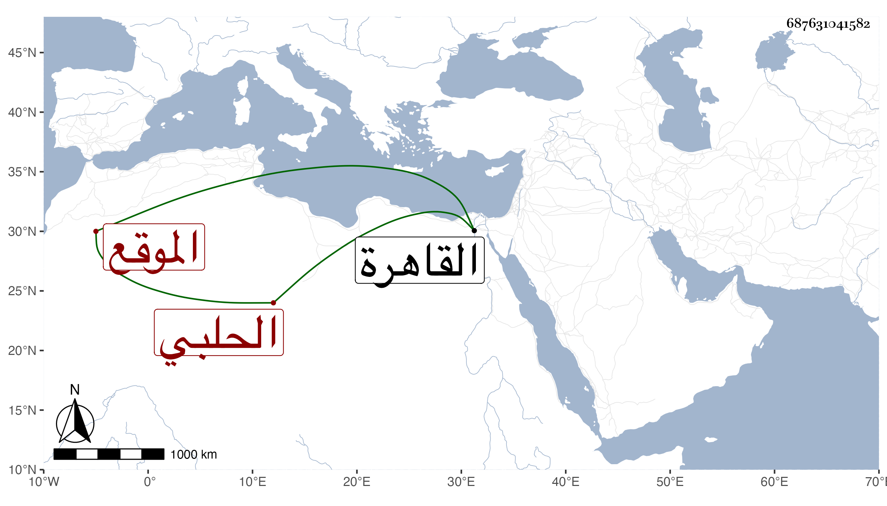

0902Sakhawi.DawLamic.ITO20230111-ara1.EIS1600.687631041582
Biography ID: 687631041582
637
محمد بن عمر بن أحمد بن عمر العز بن النجم بن الشهاب الحلبي نزيل القاهرة والماضي أبوه وجده ويعرف بابن نجم الدين الموقع . سمع مع أبيه ختم البخاري بالظاهرية القديمة على الأربعين وهو في الخامسة في المحرم سنة أربع وخمسين وحفظ القرآن وتردد إليه عبد الحق السنباطي وغيره لإشغاله قليلا وكتب التوقيع كأبيه وباشر أوقاف الجمالية وخالط بيت ابن الشحنة كسلفه ثم زوج قبيل موته ابنته لابن عبد البر ولم ير راحة . ولم يلبث أن مات في ليلة الخميس حادي عشري ذي القعدة سنة خمس وتسعين وصلي عليه من الغد ثم دفن بحوش صوفية البيبرسية . وكان كأبيه ساكنا عاقلا خلف أولادا رحمه الله وعوضه الجنة .
